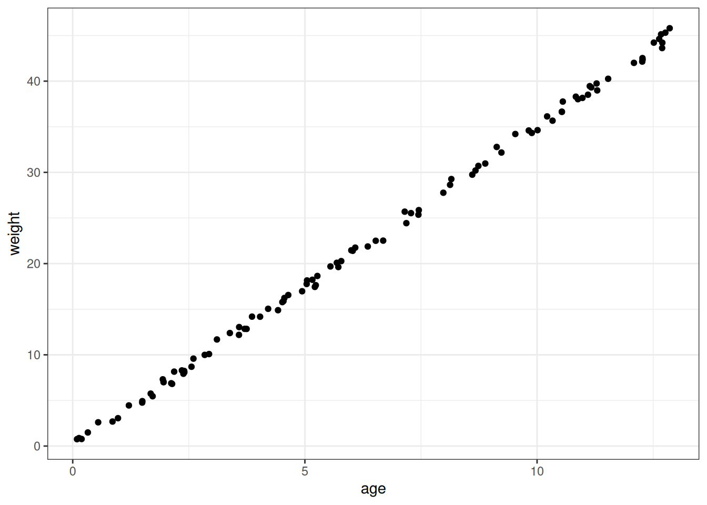
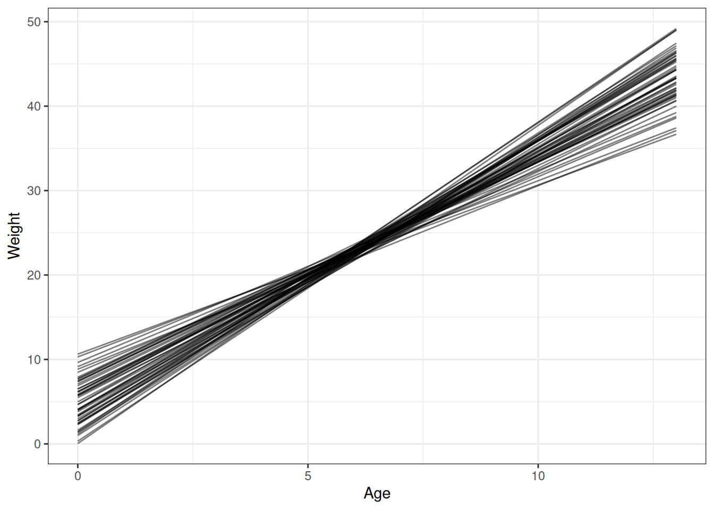
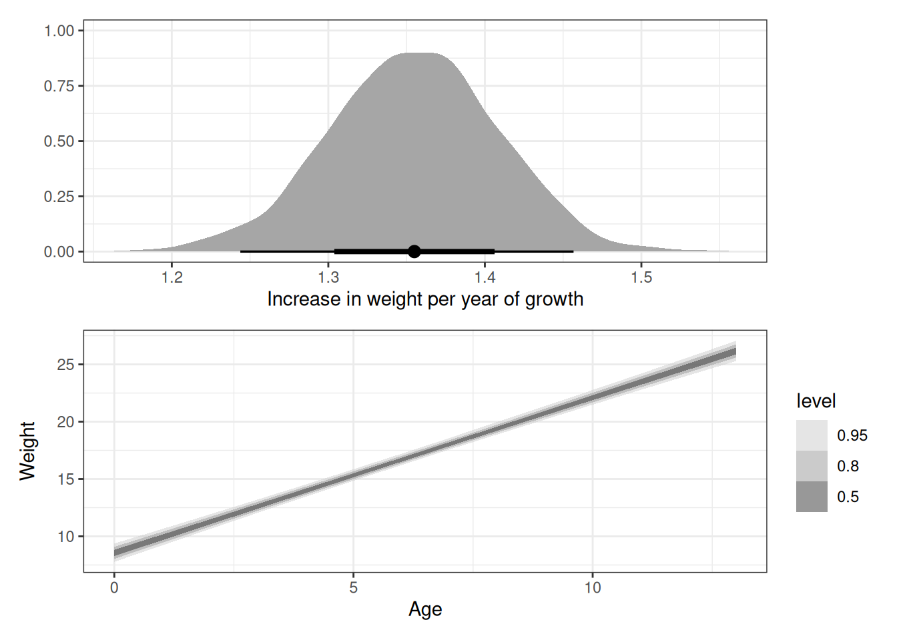

targets::tar_source('R')Homework 02
Setup
Question 1
From the Howell1 dataset, consider only the people younger than 13 years old. Estimate the causal association between age and weight. Assume that age influences weight through two paths. First, age influences height, and height influences weight. Second, age directly influences weight through age- related changes in muscle growth and body proportions.
Draw the DAG that represents these causal relationships. And then write a generative simulation that takes age as an input and simulates height and weight, obeying the relationships in the DAG.
coords <- data.frame(
name = c('H', 'A', 'W'),
x = c(2, 1, 1),
y = c(1, 2, 0)
)
dagify(
W ~ H + A,
H ~ A,
coords = coords
) |> ggdag(seed = 2) + theme_dag()
n <- 1e2
max_age <- 13
simulate_hw <- function(n, max_age) {
age <- runif(n, 0, max_age)
# General vague height at 13 years old (cm) = 130
beta_age_on_height <- 10
height <- rnorm(n = n, mean = age * beta_age_on_height, 2)
# General vague weight at 13 years old (kg) = 45
# Betas chosen to hit 45 kg approximately at 13 years old
beta_height_on_weight <- 0.2
beta_age_on_weight <- 1.5
weight <- (age * beta_age_on_weight) +
(beta_height_on_weight * height)
data.table(age, height, weight)
}
ggplot(simulate_hw(n, max_age)) +
geom_point(aes(age, weight))
Question 2
Estimate the total causal effect of each year of growth on weight.
The total causal effect of age on weight is estimated by excluding the height variable to include both paths in the DAG from age to weight directly and indirectly through height (Lecture 4: slide 28).
Prior predictive simulation
# Function for preparing Howell data
data_Howellfunction() {
if (!'rethinking' %in% .packages()) {
stop('please load the rethinking package')
}
if (!'data.table' %in% .packages()) {
stop('please load the data.table package')
}
data(Howell1)
DT <- data.table::data.table(Howell1)
DT[, sex := .GRP, by = male]
DT[, scale_height := scale(height)]
DT[, scale_weight := scale(weight)]
return(DT)
}# Load data
DT <- tar_read(Howell_lte_13)
# Print priors used
tar_read(h02_q02_brms_prior) prior class coef group resp dpar nlpar lb ub source
normal(22.5, 0.5) Intercept <NA> <NA> user
normal(3, 0.5) b <NA> <NA> user
exponential(1) sigma <NA> <NA> user# Load model
tar_load(h02_q02_brms_sample_prior)
h02_q02_brms_sample_prior Family: gaussian
Links: mu = identity; sigma = identity
Formula: weight ~ age
Data: h02_q02_brms_data (Number of observations: 157)
Draws: 4 chains, each with iter = 2000; warmup = 1000; thin = 1;
total post-warmup draws = 4000
Population-Level Effects:
Estimate Est.Error l-95% CI u-95% CI Rhat Bulk_ESS Tail_ESS
Intercept 4.69 2.98 -1.27 10.43 1.00 2978 2875
age 3.01 0.50 2.06 4.00 1.00 2838 2790
Family Specific Parameters:
Estimate Est.Error l-95% CI u-95% CI Rhat Bulk_ESS Tail_ESS
sigma 0.98 0.98 0.02 3.61 1.00 2383 1503
Draws were sampled using sample(hmc). For each parameter, Bulk_ESS
and Tail_ESS are effective sample size measures, and Rhat is the potential
scale reduction factor on split chains (at convergence, Rhat = 1).# Read N draws from the priors and append expected predictions
n_draws <- 50
q02_draws <- h02_q02_brms_sample_prior |>
add_epred_draws(newdata = unique(DT[, .(age)]),
ndraws = n_draws)
# Plot prior expectations for relationship between age and weight
ggplot(q02_draws) +
geom_line(aes(age, .epred, group = .draw), alpha = 0.5) +
labs(x = 'Age', y = 'Weight')
Analyse the data
# Load model
tar_load(h02_q02_brms_sample)
h02_q02_brms_sample Family: gaussian
Links: mu = identity; sigma = identity
Formula: weight ~ age
Data: h02_q02_brms_data (Number of observations: 157)
Draws: 4 chains, each with iter = 2000; warmup = 1000; thin = 1;
total post-warmup draws = 4000
Population-Level Effects:
Estimate Est.Error l-95% CI u-95% CI Rhat Bulk_ESS Tail_ESS
Intercept 8.56 0.41 7.78 9.38 1.00 3083 2527
age 1.35 0.05 1.25 1.46 1.00 2845 2429
Family Specific Parameters:
Estimate Est.Error l-95% CI u-95% CI Rhat Bulk_ESS Tail_ESS
sigma 2.83 0.19 2.49 3.24 1.00 2564 2453
Draws were sampled using sample(hmc). For each parameter, Bulk_ESS
and Tail_ESS are effective sample size measures, and Rhat is the potential
scale reduction factor on split chains (at convergence, Rhat = 1).# Tidy draws
q02_draws <- h02_q02_brms_sample |>
tidy_draws()
q02_newdata <- data_grid(DT, age = seq_range(age, 20))
q02_epred <- h02_q02_brms_sample |>
epred_draws(q02_newdata)
# Total causal effect of each year of growth on weight
g1 <- ggplot(q02_draws) +
stat_halfeye(aes(b_age)) +
labs(x = 'Increase in weight per year of growth', y = '')
g2 <- ggplot(q02_epred) +
stat_ribbon(aes(age, .epred), alpha = 0.5) +
scale_fill_grey(start = 0.8, end = 0.2) +
labs(x = 'Age', y = 'Weight')
g1 / g2
Question 3
The data in data(Oxboys) (rethinking package) are growth records for 26 boys measured over 9 periods. I want you to model their growth. Specifically, model the increments in growth from one period (Occasion in the data table) to the next. Each increment is simply the difference between height in one occasion and height in the previous occasion. Since none of these boys shrunk during the study, all of the growth increments are greater than zero. Estimate the posterior distribution of these increments. Constrain the distribution so it is always positive—it should not be possible for the model to think that boys can shrink from year to year. Finally compute the posterior distribution of the total growth over all 9 occasions.
Prior predictive simulation
# Function for preparing Oxboys data
data_Oxboysfunction() {
if (!'rethinking' %in% .packages()) {
stop('please load the rethinking package')
}
if (!'data.table' %in% .packages()) {
stop('please load the data.table package')
}
data("Oxboys")
DT <- data.table::data.table(Oxboys)
DT[, diff_height := height - shift(height), by = Subject]
DT[, occasion_factor := factor(Occasion)]
return(DT)
}# Load data
DT <- tar_read(prep_Oxboys)
# Print priors used
tar_read(h02_q03_brms_prior) prior class coef group resp dpar nlpar lb ub source
normal(5, 2) Intercept <NA> <NA> user
normal(3, 1) b <NA> <NA> user
exponential(1) sigma <NA> <NA> user# Load model
tar_load(h02_q03_brms_sample_prior)
h02_q03_brms_sample_prior Family: gaussian
Links: mu = identity; sigma = identity
Formula: diff_height | trunc(lb = 0) ~ occasion_factor
Data: h02_q03_brms_data (Number of observations: 208)
Draws: 4 chains, each with iter = 2000; warmup = 1000; thin = 1;
total post-warmup draws = 4000
Population-Level Effects:
Estimate Est.Error l-95% CI u-95% CI Rhat Bulk_ESS Tail_ESS
Intercept 2.03 2.03 -1.91 5.96 1.00 7052 2774
occasion_factor2 3.01 1.00 1.02 4.96 1.00 7422 2960
occasion_factor3 3.00 1.00 1.01 4.96 1.00 6295 3162
occasion_factor4 3.01 1.01 1.01 4.95 1.00 6343 2801
occasion_factor5 3.02 0.98 1.16 4.97 1.00 7570 2983
occasion_factor6 3.00 1.01 1.02 4.97 1.00 7247 2909
occasion_factor7 3.00 1.01 1.08 4.98 1.00 6212 3521
occasion_factor8 3.01 1.01 1.05 4.99 1.00 6517 2791
occasion_factor9 3.01 0.96 1.10 4.83 1.00 7117 3038
Family Specific Parameters:
Estimate Est.Error l-95% CI u-95% CI Rhat Bulk_ESS Tail_ESS
sigma 1.02 1.01 0.03 3.74 1.00 4772 2119
Draws were sampled using sample(hmc). For each parameter, Bulk_ESS
and Tail_ESS are effective sample size measures, and Rhat is the potential
scale reduction factor on split chains (at convergence, Rhat = 1).# Read N draws from the priors and append expected predictions
n_draws <- 100
q03_newdata <- na.omit(DT)[, .(occasion_factor = unique(occasion_factor))]
q03_epred_prior <- h02_q03_brms_sample_prior |>
add_epred_draws(newdata = q03_newdata, ndraws = n_draws)
# Plot prior expectations for relationship between occasion and height
ggplot(q03_epred_prior) +
stat_halfeye(aes(occasion_factor, .epred), alpha = 0.5) +
labs(x = 'Occasion', y = 'Difference in height')Analyse the data
# Load model
tar_load(h02_q03_brms_sample)
h02_q03_brms_sample Family: gaussian
Links: mu = identity; sigma = identity
Formula: diff_height | trunc(lb = 0) ~ occasion_factor
Data: h02_q03_brms_data (Number of observations: 208)
Draws: 4 chains, each with iter = 2000; warmup = 1000; thin = 1;
total post-warmup draws = 4000
Population-Level Effects:
Estimate Est.Error l-95% CI u-95% CI Rhat Bulk_ESS Tail_ESS
Intercept -1.46 0.36 -2.16 -0.73 1.00 656 946
occasion_factor2 3.04 0.40 2.25 3.80 1.00 735 1369
occasion_factor3 2.79 0.39 1.99 3.54 1.00 759 1402
occasion_factor4 3.26 0.39 2.47 4.00 1.00 798 1373
occasion_factor5 2.33 0.40 1.52 3.10 1.00 749 1503
occasion_factor6 2.65 0.40 1.85 3.43 1.00 724 1237
occasion_factor7 3.68 0.39 2.89 4.43 1.00 726 1351
occasion_factor8 3.43 0.39 2.65 4.18 1.00 725 1209
occasion_factor9 2.93 0.39 2.14 3.69 1.00 736 1528
Family Specific Parameters:
Estimate Est.Error l-95% CI u-95% CI Rhat Bulk_ESS Tail_ESS
sigma 0.85 0.06 0.76 0.98 1.00 2043 2353
Draws were sampled using sample(hmc). For each parameter, Bulk_ESS
and Tail_ESS are effective sample size measures, and Rhat is the potential
scale reduction factor on split chains (at convergence, Rhat = 1).# Expectation draws
q03_epred <- h02_q03_brms_sample |>
add_epred_draws(newdata = q03_newdata, ndraws = n_draws)
# Plot posterior expectations for relationship between occasion and height
ggplot(q03_epred) +
stat_halfeye(aes(occasion_factor, .epred), alpha = 0.5) +
labs(x = 'Occasion', y = 'Difference in height')# Tidy draws
q03_draws <- h02_q03_brms_sample |>
tidy_draws() |>
data.table()
# Calculate total growth
q03_draws[, total_growth := rowSums(.SD), .SDcols = patterns('b_occasion')]
ggplot(q03_draws) +
stat_halfeye(aes(total_growth)) +
labs(x = 'Total growth over 9 occasions', y = '')